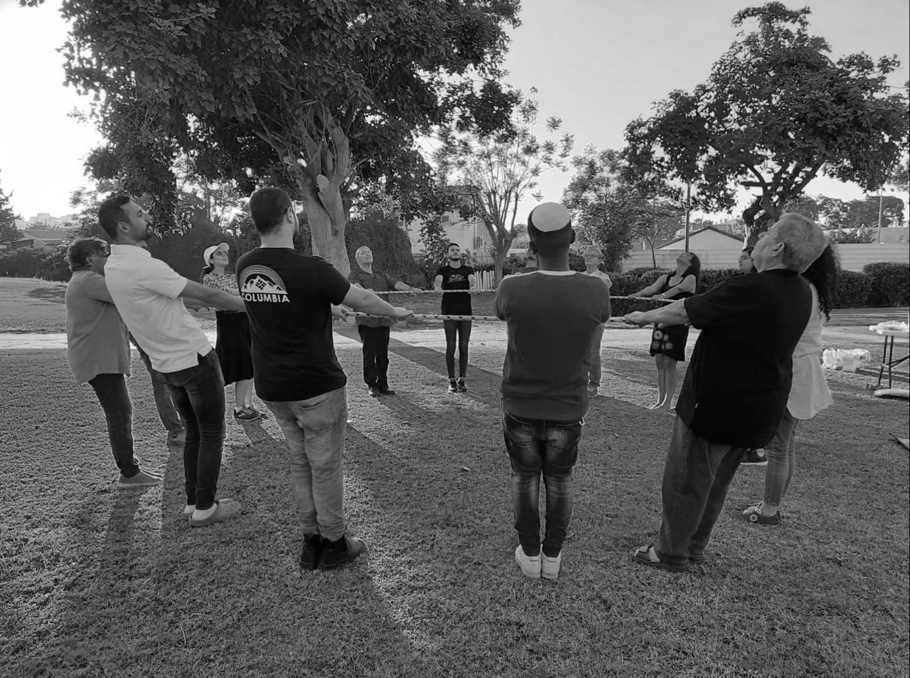
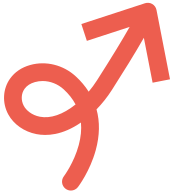
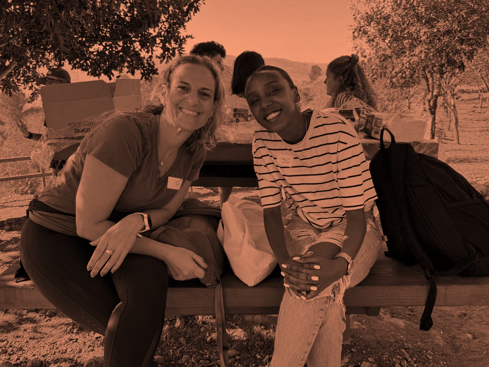
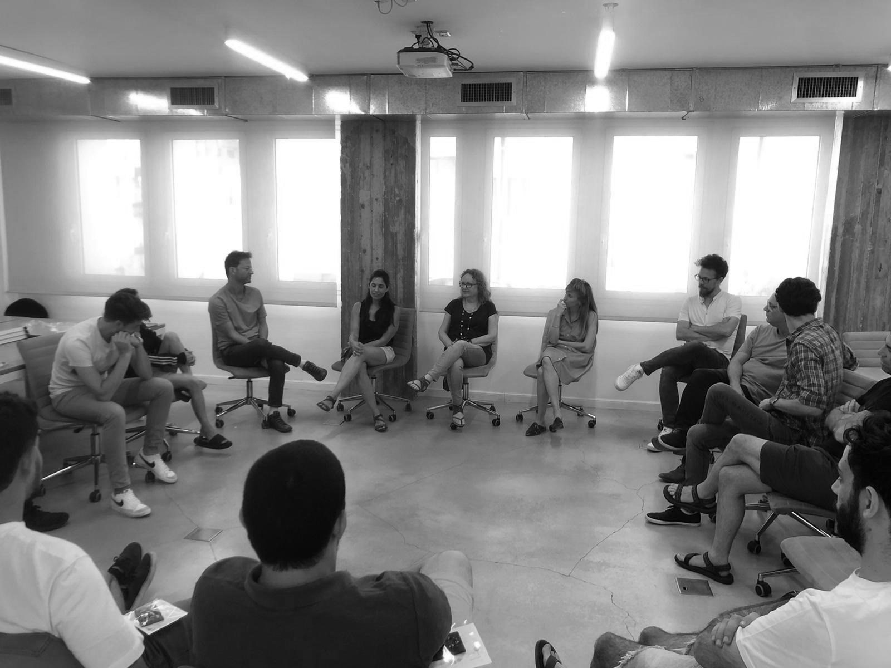

תוכנית הדגל
עמית לדרך
שנה שמשנה חיים
ליווי אישי למשך שנה, בשלבים המכריעים של תחילת החיים הבוגרים. הצמדה של מנטור אישי ובנייה משותפת של תכנית פעולה לחיים.
מנטורינג משנה חיים
עמית לדרך מלווה חיילות וחיילים משוחררים שגדלו בסביבה מוחלשת - עם מנטור אישי לשנה שלמה.

למה זה חשוב
מדי שנה משתחררים מצה״ל יותר מ-8,000 חיילות וחיילים שגדלו בסביבה מוחלשת.
הצבא היה עבורם מסגרת יציבה ובטוחה. עם השחרור, רובם חוזרים לאותה מציאות מורכבת שממנה הגיעו.
בישראל חיים היום כ-200 אלף צעירים בסיכון.
רק 30% מהם מקבלים סיוע - מצומצם וחלקי.
ומאז ה-7.10 הצורך התרחב והעמיק. החובה שלנו כחברה היא לא להשאיר אותם לבד.

פריסה ארצית - מנתיבות בדרום ועד חורפיש בצפון
המודל שלנו
מנטורינג אישי לשנה. דמות מיטיבה שנותנת תחושת מסוגלות ומחזקת ערך עצמי - אתם לא לבד.
קבוצת שווים שמהווה מקום לשיתוף והעצמת התהליך.
ליווי וטיפול מקצועי לפי הצורך, מכמה זוגות עיניים.
הכוון תעסוקתי פסיכולוגי, ייעוץ משפטי, מיצוי זכויות, ייעוץ כלכלי, מלגות ועוד.
התוכניות שלנו
תוכנית הדגל
שנה שמשנה חיים
ליווי אישי למשך שנה, בשלבים המכריעים של תחילת החיים הבוגרים. הצמדה של מנטור אישי ובנייה משותפת של תכנית פעולה לחיים.
טכנולוגיה
כרטיס כניסה לעולם הטכנולוגי
חשיפה, כלים והכשרות, עם מנטור מלווה מעולמות ההייטק.
טווח ארוך
מנטורינג לטווח ארוך
ליווי ממושך תוך כדי המעברים לשירות הצבאי, במהלכו ולאחריו - הכוונה ותמיכה להשלמת שירות משמעותי ויציאה מיטיבה לאזרחות.
נבחרת המנטורים
בתהליך שעברתי נתרמתי לא פחות ממה שהצעיר שלי נתרם. למדתי על עצמי, שיפרתי את ההורות שלי, את התקשורת עם העובדים שלי… זו הייתה חוויה משנת חיים.

לחיילות ולחיילים משוחררים
ליווי אישי ממנטור/ית, סדנאות וכלים פרקטיים, נטוורקינג, מלגות ומענה אישי - ללא עלות.
הצטרפו לדרך
תורמים
התרומה שלכם מאפשרת לעוד צעירה ועוד צעיר לקבל מנטור, סדנאות ומעטפת לשנה שלמה.
אפשר לתרום גם דרך
מנטורים ומתנדבים
זו ההזדמנות לעשות משהו בשביל מישהו אחר - להיות משמעותיים עבור צעיר/ה שמאמינים שיש מחר טוב יותר.
חברות וארגונים
תוכנית מנטורינג בלעדית לארגון, שבה מנהלים ועובדים בכירים מלווים את צעירי עמית לדרך.
בלוג ותקשורת

תקציר קצר של העדכון.

שם הכלי התקשורתי ותקציר.

סיפור אישי מהתוכנית.
* כרטיסים לדוגמה - יוחלפו בתוכן אמיתי מהעמותה.